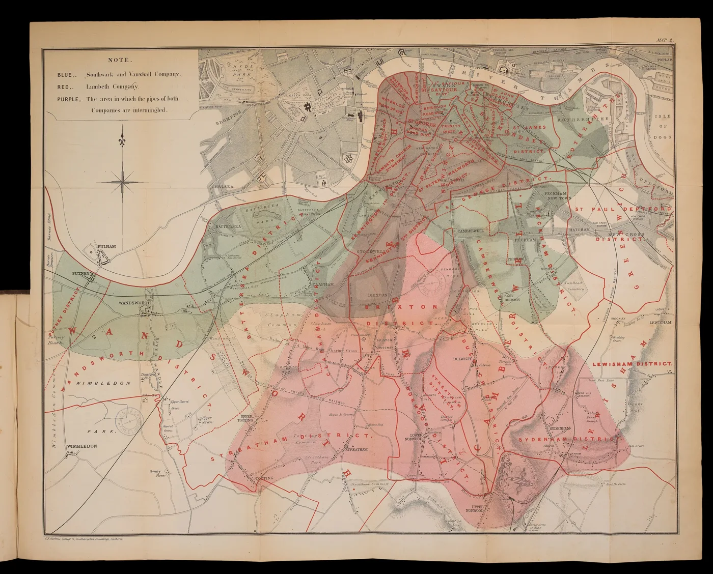
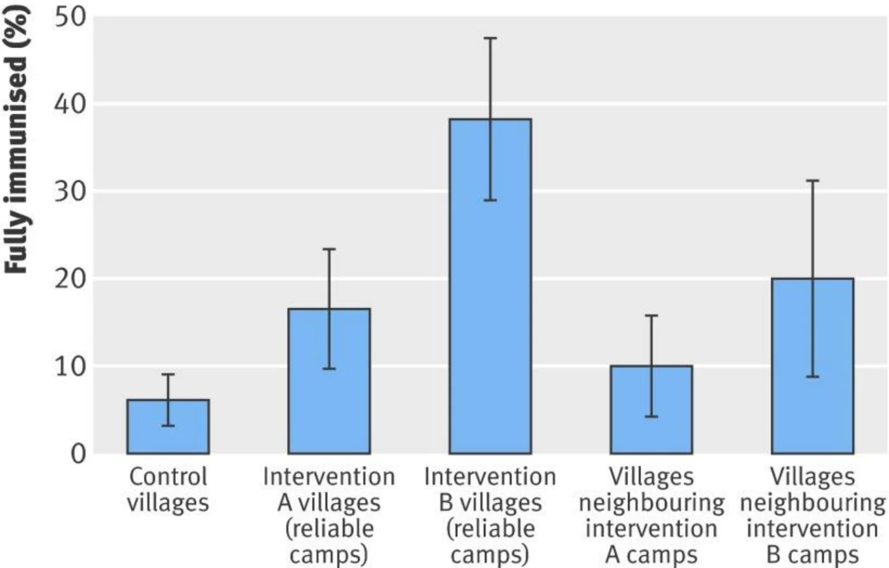
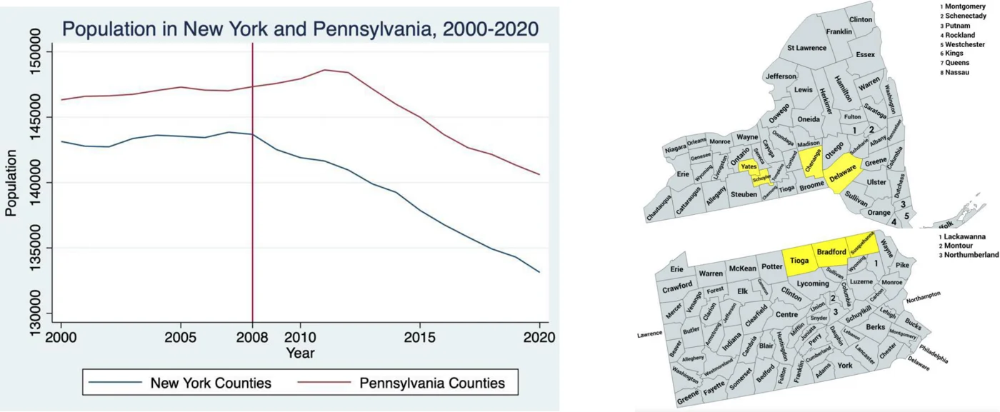
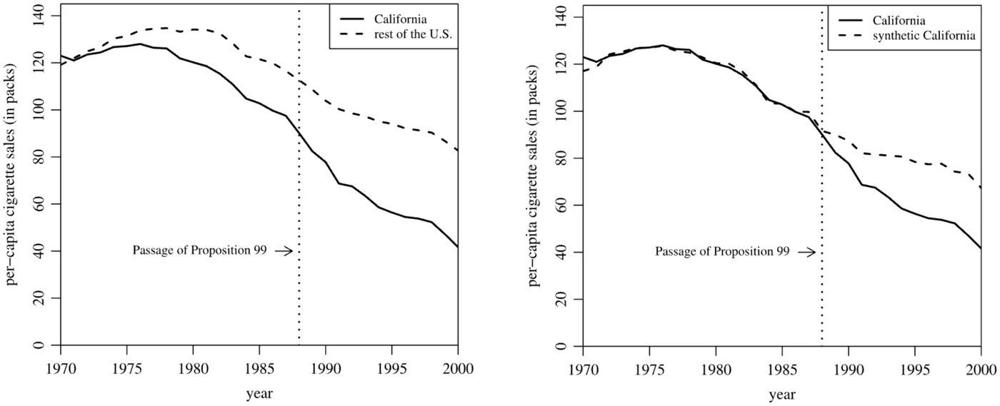
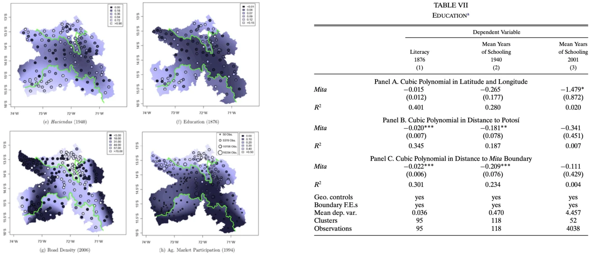

In 1854 John Snow marked each cholera death in Soho on this map and found them concentrated around the Broad Street pump. The map suggested the cause; the proof came from south of the river. There, two water companies supplied the same streets, one drawing from the Thames below the sewer outfalls and one from upstream, and households had chosen their supplier years earlier for reasons unconnected with cholera. Snow compared the death rates of the two sets of customers as if a lottery had assigned the water. The comparison worked because the rule that assigned the supplier had nothing to do with the outcome.

Map 2 from the same book: the districts supplied by the Southwark and Vauxhall Company and by the Lambeth Company, and the area where the pipes of both were intermingled. The comparison was made within that shared area. Public domain.
The five designs below are five ways of finding such a rule. Each is told through the study the lecture uses, with the same three questions: who decided who was treated, what has to be assumed, and how the authors checked. The pictures are sketches of the logic, not the published data.
Some units receive the treatment and others do not, and a lottery decides which. The two groups then differ only in the treatment, so any later difference in outcomes is the effect of the treatment.
The question
Rural Rajasthan, 2004 to 2007. Would a reliable monthly immunisation camp raise the share of children fully immunised, and would a small reward on top of the camp, a bag of lentils for each visit and a set of plates on completion, raise the share further?
Who decided who was treated
A lottery. The authors drew 134 villages at random into three groups: a camp (30 villages), a camp with rewards (30 villages), and no intervention (74 villages). A village's poverty, remoteness, and attitude to vaccination had no bearing on its group.
The comparison
The share of children fully immunised in each group. Because the lottery had already made the groups alike, the raw shares can be compared without adjustment.
The finding
About 6% of children were fully immunised in the control villages, 18% in the camp villages, and 39% in the villages with a camp and rewards.
The assumption and the check
The design assumes that the lottery was fair and that villages stayed in their assigned groups. The check is a balance table: before the camps opened, the three groups should look alike on household size, distance to a clinic, baseline immunisation, and other measured characteristics.

Fully immunised, by arm, with 95% confidence intervals. The two right-hand bars are villages within six kilometres of a camp, which also gained. Banerjee, Duflo, Glennerster, and Kothari, 2010.
Banerjee, Duflo, Glennerster, and Kothari, BMJ 2010; 340: c2220.
Design II · Difference in differences
Two places, before and after
The idea
One of two places receives a policy. The two were never alike, so the design compares the change in each place rather than the places themselves. The change in the untreated place stands for what would have happened without the policy, and the additional change in the treated place is the effect.
The question
Did fracking bring people to the places that allowed it? Pennsylvania drilled the Marcellus shale from the late 2000s. New York, on the same shale, imposed a moratorium and then a ban.
Who decided who was treated
Two state governments, for reasons of politics and law. The design rests on the claim that those decisions were unrelated to where each state's population was already heading.
The comparison
Population in the two states from 2000 to 2020. The change in Pennsylvania after drilling began, minus the change in New York over the same years.
The finding
A Land Economy MPhil dissertation (Faulk, 2022) used this comparison to ask whether the fracking counties grew relative to their neighbours across the state line. The estimate is the gap that opens after drilling begins, over and above the gap that existed before.
The assumption and the check
Parallel trends: without fracking, the two populations would have continued to move together. The only evidence is the years before drilling. Lines that run side by side until the policy and separate afterwards support the design; lines that were already separating do not. Drag the slider to give Pennsylvania a trend of its own before 2008 and compare the estimate with the true effect in the sketch.

Population in New York and Pennsylvania counties, 2000 to 2020, with drilling from 2008. Faulk, 2022.
Sketch: population index, 2000 = 100, with drilling from 2008. The dashed line is the counterfactual Pennsylvania the design assumes, Pennsylvania's level with New York's trend.
Which observation would most damage this design?
Faulk, 2022, MPhil dissertation, Department of Land Economy.
Design III · Synthetic control
A control built from parts
The idea
No single state resembles California closely enough to serve as its control. A weighted average of other states can be chosen so that, before the policy, the average tracks California year by year. After the policy, the average continues as California would have done without the law.
The question
Did Proposition 99 of 1988, a 25 cent per pack tobacco tax with the revenue spent on anti-smoking campaigns, reduce cigarette sales in California?
Who decided who was treated
California's voters, in a referendum. No other state adopted a comparable measure at the time, so there is one treated state and no ready comparison.
The comparison
The rest of the United States is the obvious control and fails: its sales were already on a different path before 1988. The synthetic California is a weighted average of Utah, Nevada, Montana, Colorado, and Connecticut, with weights chosen so that the average matched California's sales year by year before 1988.
The finding
After 1988 California's sales fell below the synthetic line. By 2000, per capita sales were about 26 packs a year lower than the synthetic California, roughly a quarter below the counterfactual.
How the weights were chosen
The donor pool was the 38 states with no large tobacco tax rise or control programme over the period. For each state the authors took pre-1988 predictors of cigarette sales: retail price, per capita income, beer consumption, the share of the population aged 15 to 24, and sales in 1975, 1980, and 1988. The weights are non-negative numbers, one per donor, summing to one, chosen so that the weighted average of the donors' predictors is as close as possible to California's. Each predictor carries an importance weight, and those are chosen in turn so that the synthetic state reproduces California's actual sales path before 1988. Thirty-three donors end with a weight of zero because the best match uses only a few states.
The assumption and the check
The design assumes a close match before 1988 and no comparable tobacco policy in the donor states afterwards. The check is a placebo test: the authors built a synthetic version of each untreated state in turn, as if that state had passed the law, and asked whether California's gap was unusually large among them.

Left: California against the average of the other states, which was already moving differently before 1988 and so cannot stand for California without the law. Right: California against the synthetic California, which tracks the pre-1988 path and then separates. Abadie, Diamond, and Hainmueller, 2010.
The five donor weights, which sum to one.
Abadie, Diamond, and Hainmueller, Journal of the American Statistical Association 2010; 105(490): 493 to 505.
Design IV · Regression discontinuity
Either side of a line
The idea
A rule draws a line, and treatment switches at the line. Units just on either side are alike in every respect except the treatment, so a comparison restricted to the neighbourhood of the line estimates the effect.
The question
Does a colonial institution leave a mark centuries later? The mita, from 1573 to 1812, required villages in part of Peru and Bolivia to send a seventh of their adult men to the silver mines of Potosí and the mercury mines of Huancavelica.
Who decided who was treated
The Spanish crown drew the boundary of the catchment. Villages just inside sent men to the mines and villages just outside did not. The land, the people, and the climate were the same on both sides.
The comparison
Households today, just inside the old boundary against just outside. Distance to the boundary is the running variable, and only households close to the line enter the comparison.
The finding
Household consumption inside the former catchment is about 25% lower today, and stunting among children about 6 percentage points higher. The channels identified were weaker land tenure and poorer roads inside the line.
The assumption and the check
The design assumes that nothing else changes at the line: households did not move across in anticipation, and no other policy switches there. The checks are a density test, for bunching of households on one side, and balance tests on characteristics the mita could not have caused, such as elevation and rainfall. Narrow the bandwidth below and compare the estimate with the sample size.

The mita boundary in green across the study region, with district outcomes shaded, and estimates of the mita effect on schooling. Dell, 2010.
50 km
Sketch: districts by distance to the boundary, inside to the left of zero, with an invented consumption index. The lines are fitted separately on each side within the bandwidth, and the gap at zero is the estimate.
Dell, Econometrica 2010; 78(6): 1863 to 1903.
Design V · Instrumental variable
A lever that moves only the treatment
The idea
The treatment cannot be randomised, but something random pushes some people towards the treatment. The design measures how much the push raised the probability of treatment and how much the push moved the outcome, and divides the second by the first.
The question
What did military service in the Vietnam era do to men's later earnings? Veterans and non-veterans cannot simply be compared, because the men who served differed from those who did not in health, schooling, and prospects.
Who decided who was treated
Partly a lottery. From 1970, birthdays were drawn and numbered from 1 to 365, and men with low numbers were called first. A low number did not determine service, since many low-number men were exempt and many high-number men volunteered, but a low number made service much more likely.
The comparison
Two stages. The first measures how much more likely a man with a low number was to serve. The second measures how much lower the earnings of low-number men were years later. The effect of service is the second divided by the first, because a lottery number can reach earnings only through service.
The finding
White veterans earned about 15% less in the early 1980s than they would have without serving, roughly 3,500 dollars a year at the time.
Why the two stages are divided
Suppose 35 of every 100 low-number men served and 20 of every 100 high-number men did: the lottery moved 15 men per 100 into service. Suppose low-number men then earned 4.5% less on average. The lottery number cannot change pay by itself, so the gap came through service, and the 85 men per 100 whose service the lottery did not change contribute nothing to the gap. The 4.5% is therefore produced by 15 men per 100, and the loss per man is 4.5 divided by 0.15, which is 30%. Dividing the reduced form by the first stage spreads the gap over the people the push moved, and the result applies to them, not to every veteran. Two-stage least squares does the same arithmetic by regression. The figures here match the sketch below; Angrist's estimate is about 15%.
The assumption and the check
Two conditions. The instrument must move the treatment, which the first stage shows directly. The instrument must affect the outcome only through the treatment, and that condition cannot be tested; the authors argue for it from how the lottery worked. Drag the slider to see how a weak first stage inflates the estimate from the same earnings gap.
15 points more likely to serve
Sketch: lottery numbers along the bottom, with those below the call-up ceiling on the left. Upper line, share who served; lower line, later earnings. The jumps are illustrative.
Which of these would invalidate the lottery as an instrument?
Angrist, American Economic Review 1990; 80(3): 313 to 336.
The five designs compared
Assignment, assumption, check
Design
Who decided who was treated
What has to be assumed
How to check
Randomised trial
A lottery run by the researchers
The lottery was fair and units stayed in their groups
Balance table before treatment
Difference in differences
A policy that reached one group at one time
Parallel trends without the policy
Pre-period trends, placebo dates
Synthetic control
A policy in one unit, with many untreated units
The weighted donors track the unit before the policy and would have tracked it after
Pre-period fit, placebo units
Regression discontinuity
A rule with a threshold or a boundary
Nothing else changes at the threshold, and no sorting across the line
Density test, balance at the threshold
Instrumental variable
A random push towards the treatment
The push moves the treatment and reaches the outcome only through the treatment
First-stage strength; the exclusion is argued, not tested
Each design begins by establishing who decided who was treated: the researchers' lottery, a legislature, a referendum, a colonial boundary, or a draft board. The regression that follows estimates the effect only once that question has been answered.
Images: John Snow, On the Mode of Communication of Cholera, 1855; map drawn by C. F. Cheffins. Public domain, Wikimedia Commons